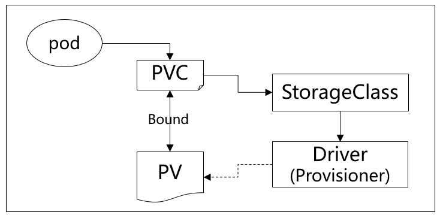

k8s存储概念
volume
volume是k8s对存储资源的抽象，一个逻辑存储对象。我们在pod的定义中，container代表计算资源，volume代表存储资源。volume屏蔽了存储的具体实现，可直接由container挂载使用，类似linux中的逻辑卷（LV）。container中根目录结构由镜像决定，任何volume都必须挂载在container根目录结构上。
从上述描述可以看出，volume的使用可以减少计算资源和存储资源间的耦合，为持久volume提供基础，同时能很容易的扩展和共享。
使用volume分为两步：
-
在pod中定义volume
pod.spec.volumes.
- CSI
- downwardAPI
- emptyDir
- hostPath
- nfs
- pvc
- configMap
- secret
-
在container中挂载volume
挂载volume卷不能挂载到其他卷之上（不过存在一种使用 subPath 的相关机制），也不能与其他卷有硬链接。
pod.spec.containers.volumeMounts
k8s中，volume分为临时和永久，临时volume在pod中定义，一般由k8s本身实现，同pod同生命周期，pod销毁临时volume也会被销毁。
持久volume根据存储介质不同有不同的服务商，k8s通过CSI接口对其进行调用，其中涉及pv，pvc和storageClass对象，如下图。

pvc
- k8s资源对象，描述pod需要使用的pv的属性，如大小、读写权限
- 必须属于特定namespace
- 类似接口，pod通过pvc来获取pv
1
2
3
4
5
6
7
8
9
10
11
12
|
# pvc例子
apiVersion: v1
kind: persistentVolumeClaim
metadata:
name: pvc
spec:
accessModes: #访问模式
selector: #采用标签对PV选择
storageClassName: "" #此处须显式设置空字符串，否则会被设置为默认的 StorageClass
resources: #请求空间
request:
storage: 1Gi
|
pv
- 物理volume在k8s中的资源对象，持久化volume的具体实现，用来描述持久化volume属性
- 集群中的资源，无namespace
1
2
3
4
5
6
7
8
9
10
11
12
13
|
# pv例子
apiVersion: v1
kind: PersistentVolume
metadata:
name: nfs
spec:
capacity: #容量
storage: 10Gi
accessModes: #权限
- ReadWriteMany
nfs: #特定类型卷的参数
server: 10.244.1.4
path: "/nfs"
|
StorageClass
相当于pv的模版，用来根据pvc自动生成pv
K8S平台为存储提供商提供存储接入的一种声明，通过StorageClass和相应的存储插件(csi/flexvolume)为容器应用提供动态分配存储卷的能力。

1
2
3
4
5
6
7
8
9
10
11
12
13
14
15
16
17
18
19
20
21
22
23
24
25
26
27
28
29
|
#例子
apiVersion: storage.k8s.io/v1
kind: StorageClass
metadata:
name: fast
provisioner: kubernetes.io/rbd
parameters:
monitors: 10.16.153.105:6789
adminId: kube
adminSecretName: ceph-secret
adminSecretNamespace: kube-system
pool: kube
userId: kube
userSecretName: ceph-secret-user
userSecretNamespace: default
fsType: ext4
imageFormat: "2"
imageFeatures: "layering"
---
apiVersion: storage.k8s.io/v1
kind: StorageClass
metadata:
name: example-nfs
provisioner: example.com/external-nfs #存储插件
parameters: #特定类型volume的参数。pv的模版
server: nfs-server.example.com
path: /share
readOnly: "false"
|
持久化卷
持久化卷涉及到三个资源对象：pv, pvc, storageClass
创建PV过程

-
attach阶段
-
pod调度到某node时，kubelet会为pod的volume在宿主机创建目录，如上图中hostPath，宿主机上具体如今为：
/var/lib/kubelet/pods/<podID>/volumes/kubernetes.io~<volume type>/<volumeName>
1
2
3
4
5
|
pwd;ls -rlt # 宿主机路径和内容
/var/lib/kubelet/pods/8730d279-50b1-4330-8ec7-49caa74cb17d/volumes/kubernetes.io~projected/kube-api-access-5xmwv
lrwxrwxrwx. 1 root root 12 Jun 22 08:33 token -> ..data/token
lrwxrwxrwx. 1 root root 16 Jun 22 08:33 namespace -> ..data/namespace
lrwxrwxrwx. 1 root root 13 Jun 22 08:33 ca.crt -> ..data/ca.crt
|
-
kubelet依据volume类型不同，采用不同的方法把PV挂载到宿主机上
如果是远程块存储，会把块设备挂载到宿主机
如果是文件存储（NFS），则无需挂载
-
mount阶段
- 格式化磁盘
- 把磁盘挂载到hostPath目录上，如果是文件存储（NFS）则把目录挂在到hostPath
接下来kubelet通过CRI的Mounts参数把hostPath传递给docker，container就可以挂在到这个volume了。
local PV
local pv允许使用宿主机上的磁盘或快设备创造pv
不要把宿主机目录作为pv
下面是一个local pv的例子
pv
1
2
3
4
5
6
7
8
9
10
11
12
13
14
15
16
17
18
19
20
21
22
|
apiVersion: v1
kind: PersistentVolume
metadata:
name: example-pv
spec:
capacity:
storage: 100Gi
volumeMode: Filesystem
accessModes:
- ReadWriteOnce
persistentVolumeReclaimPolicy: Delete
storageClassName: local-storage #设置storageClass
local: #本地磁盘的路径
path: /mnt/disks/ssd1
nodeAffinity: #定义pv和node的绑定关系
required:
nodeSelectorTerms:
- matchExpressions:
- key: kubernetes.io/hostname
operator: In
values:
- example-node
|
storageClass
1
2
3
4
5
6
|
apiVersion: storage.k8s.io/v1
kind: StorageClass
metadata:
name: local-storage
provisioner: kubernetes.io/no-provisioner #不支持Dynamic Provisioning
volumeBindingMode: WaitForFirstConsumer #延迟卷绑定
|
pvc
1
2
3
4
5
6
7
8
9
10
11
|
apiVersion: v1
kind: persistentVolumeClaim
metadata:
name: local-claim
spec:
accessModes:
- ReadWriteOnce
storageClassName: local-storage # 指定storageClass
resources: # 请求空间
request:
storage: 5Gi
|
pod
1
2
3
4
5
6
7
8
9
10
11
12
13
14
15
16
17
18
|
kind: Pod
apiVersion: v1
metadata:
name: example-pv-pod
spec:
volumes: #定义pod的volume
- name: example-pv-storage
persistentVolumeClaim:
claimName: local-claim
containers:
- name:
image: nginx
ports:
- containerPort: 80
name: "http-server"
volumeMounts: #挂在pod的volume
- mountPath: "/usr/share/nginx/html"
name: example-pv-storage
|
延迟卷绑定把实时发生的pvc和pv的绑定过程延迟到pod第一次调度时进行，保证不影响pod正常调度。
删除此local pv步骤：
- 删除pod
- 宿主机移除本地磁盘（unmount）
- 删除pvc
- 删除pv
未完待补充
参考
k8s之数据存储
官网
深入剖析Kubernetes
文章作者
上次更新
2022-06-25
(6609bc7)